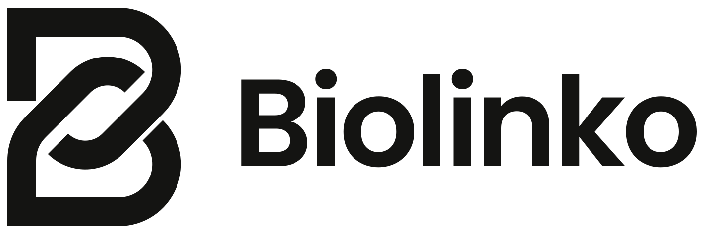
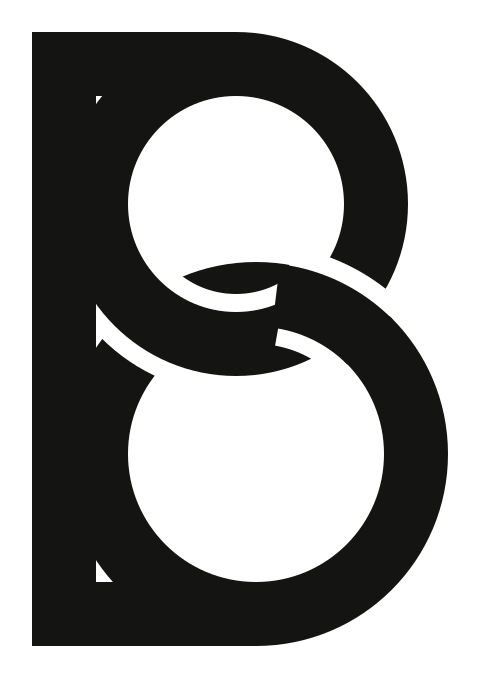
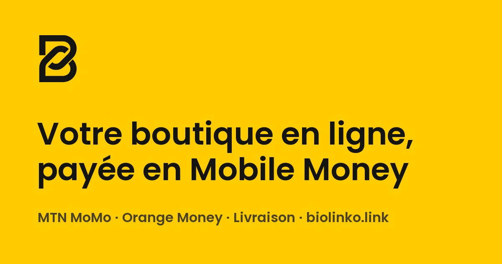

Charte graphique
Couleurs, typographie, logo, fonds et motifs de Biolinko, tels qu'utilisés dans l'application après la refonte.
Logo
Un B formé de deux maillons de chaîne qui s'entrelacent : « bio » + « link ».
Horizontal, encre sur clair (usage principal)
Horizontal, symbole jaune et nom encre (fonds clairs, crème)
Horizontal, blanc sur encre
Icône d'application, favicon, avatar réseaux
Règles · Zone de protection autour du logo : la largeur d'un trait du symbole, au minimum. · Taille minimum : 16 px pour l'icône, 24 px de haut pour le logo horizontal. · Ne pas déformer, incliner, ajouter d'ombre ni de contour. · Sur photo, utiliser l'icône (carré jaune) plutôt que le logo seul.
Le logo est-il bien ?
Oui, le concept est très bon, on le garde. Le B dessiné par deux maillons dit exactement ce qu'est Biolinko (un lien qui relie le vendeur et ses clients), il est simple, mémorable et lisible jusqu'à 16 px.
Ce qui n'allait pas, c'était le fichier : une image PNG avec un double trait gris à l'intérieur (invisible en petit, sale à l'impression) et aucune version vectorielle. Il est maintenant redessiné en SVG, en un seul aplat, dans toutes les déclinaisons ci-dessus.

Proposition alternative : « deux anneaux »
Un B dont les deux ventres sont deux anneaux entrelacés. Plus doux et plus « bijou », mais il se lit moins vite comme un B et ressemble à un 8 en petit. Je recommande de garder le logo actuel.
Couleurs
Le jaune est l'accent de la marque, jamais une surface entière. Le texte est une encre chaude, pas du noir pur.
Or foncé (texte sur jaune pâle)#7A5B00
Sable foncé (onglets)#F2F1EC
Blanc cassé (survol)#FAFAF8
Succès#15803D · fond #DCFCE7
Erreur#B91C1C · fond #FEF2F2
Information#1D4ED8 · fond #E0EAFF
Bordures : noir à 6 % (cartes) ou 8 % (champs, séparateurs). Boutiques des vendeurs : leur propre couleur remplace le jaune sur les boutons, avec un texte noir ou blanc choisi automatiquement pour rester lisible.
Typographie
Une seule famille : Poppins (Google Fonts), pour tout, des titres aux chiffres.
Vendez en ligne,
encaissez en Mobile Money
Titre · Poppins Medium (500) · 28 à 44 px · interlettrage −0,03 em
Titre de section
Poppins Medium · 17 à 20 px
Texte courant : votre boutique est prête, partagez votre lien sur WhatsApp.
Poppins Regular (400) · 14 à 16 px
125 400 FCFA
Chiffres et montants · Medium · chiffres tabulaires · « FCFA » après le montant, espace fine entre milliers
Aa
Regular 400 · Medium 500 · SemiBold 600 · Bold 700
Medium pour les titres et boutons, SemiBold pour le nom « Biolinko » et les montants à mettre en avant, Regular pour le texte. Éviter Black (900) et les titres en MAJUSCULES espacées. Le texte est en français, ton direct et chaleureux (« Mon panier », « Payer 12 500 FCFA »).
Composants
Payer 12 500 FCFA
Enregistrer
Annuler
Rembourser
PayéeEn attenteEn livraisonAnnuléeProBrouillon
Boutons en pilule (entièrement arrondis) · cartes arrondies à 24 px avec bordure fine, sans ombre forte · champs arrondis à 12 px · icônes Lucide, trait fin · animations courtes et douces (apparition par léger glissement vers le haut, 0,35 s).
Fonds et motifs
Sable · panneaux, récapitulatifs
Crème · mises en avant, alertes douces
Dégradé blanc → sable · bas de sections
Grille fine · fond de la page d'accueil (motif-grille.svg)
Points · fonds discrets (motif-points.svg)
Maillons · papeterie, réseaux, packaging (motif-maillons.svg)
Orbites et halo miel · héros de la page d'accueil (fond-orbites.svg)

Image de partage par défaut (WhatsApp, Facebook) · 1200 × 630 · public/images/brand/og-biolinko.jpg
À éviter
Grands aplats noirs ou boutons noirs sur les pages publiques (le noir est réservé aux actions secondaires de l'espace vendeur) · jaune en fond plein d'une page entière · texte blanc sur jaune (illisible) · plusieurs polices · ombres lourdes · fausses statistiques, faux avis ou photos de banque d'images trompeuses.